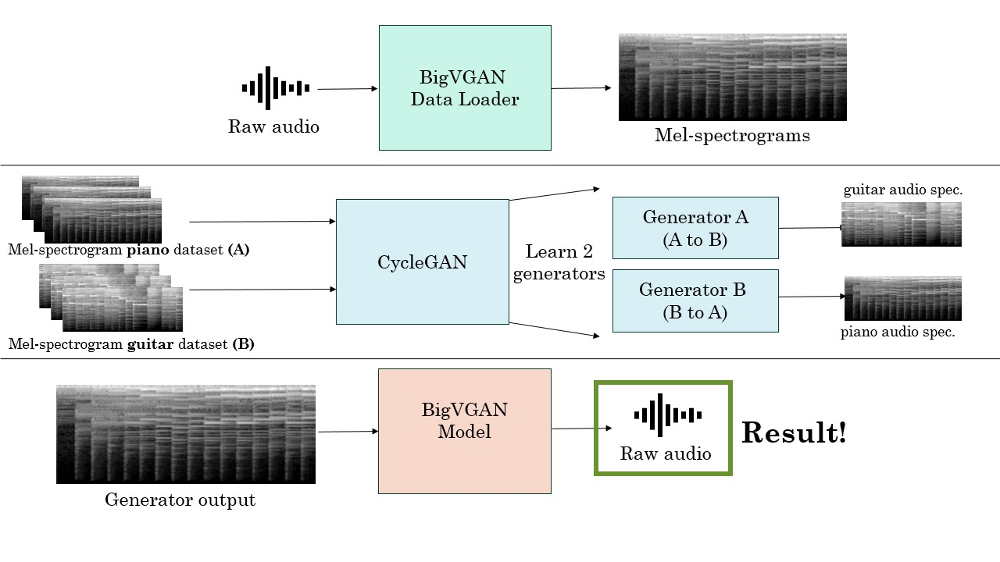

Music Style Transfer with CycleGANs
Final Project, Northwestern University CS496: Deep Generative Models by Professor Bryan Pardo
By
- Rohin Nanavati rohinnanavati2023@u.northwestern.edu
- David McDevitt davidmcdevitt2023@u.northwestern.edu
- Shruthi Hariharan shruthihariharan2023@u.northwestern.edu
Description
Image style transfer is a popular task where visible features from on image are transferred to another image. In audio, these transferrable features are not obvious enough, and we wanted to see if we could train a model to learn them and do this through image representations and not audio. Our project aims to perform audio style transfer: in our case, this refers to translating sound played on one instrument to another. We particularly focused on doing this in a manner similar to image style transfer, by using an image representation of audio - spectrograms. We then use CycleGANs for the image-to-image translation. We use BigVGAN for spectrogram-audio conversion. First, we create our own dataset by converting ~3 hours of Beethoven piano pieces in MIDI files to their nylon string guitar versions. For the resulting audio, we split them into chunks of 5.47 seconds and passed them through the Data Loader module of BigVGAN to compute mel spectrograms in the format Big VGAN accepts. Then, we pass our model through CycleGAN (modified slightly to work on rectangular image rather than square images) and train our two discriminators, one from piano to guitar audio and the other from guitar to piano. CycleGAN works on cycle-consistency loss, in which the original audio is passed through both the generators (generator 1: original to converted style -> generator 2: converted to original style) to get reconstructed audio. The loss is the L1-norm of the difference in reconstructed and original audio. Our CycleGAN model outputs spectrograms, which need to be converted back to audio. For this we use a pre-trained Vocoder BigVGAN. We showcase our test cases and an out-of-dataset real-world example (The piano intro to Colplay's 'Clocks').
Architecture Pipeline
Samples
| Audio (Piano to Guitar) | Description |
|---|---|
|
Real A (Original Piano audio) | |
|
Piano audio reconstructed by Generator B | |
|
Guitar version of Real A (Piano), generated by Generator A | |
| Audio (Guitar to Piano) | Description |
|
Real B (Original Guitar audio) | |
|
Guitar audio reconstructed by Generator A | |
|
Piano version of Real B (Guitar), generated by Generator B |
| Piano Audio Input ('Clocks' by Coldplay) | Guitar Audio Output |
|---|---|